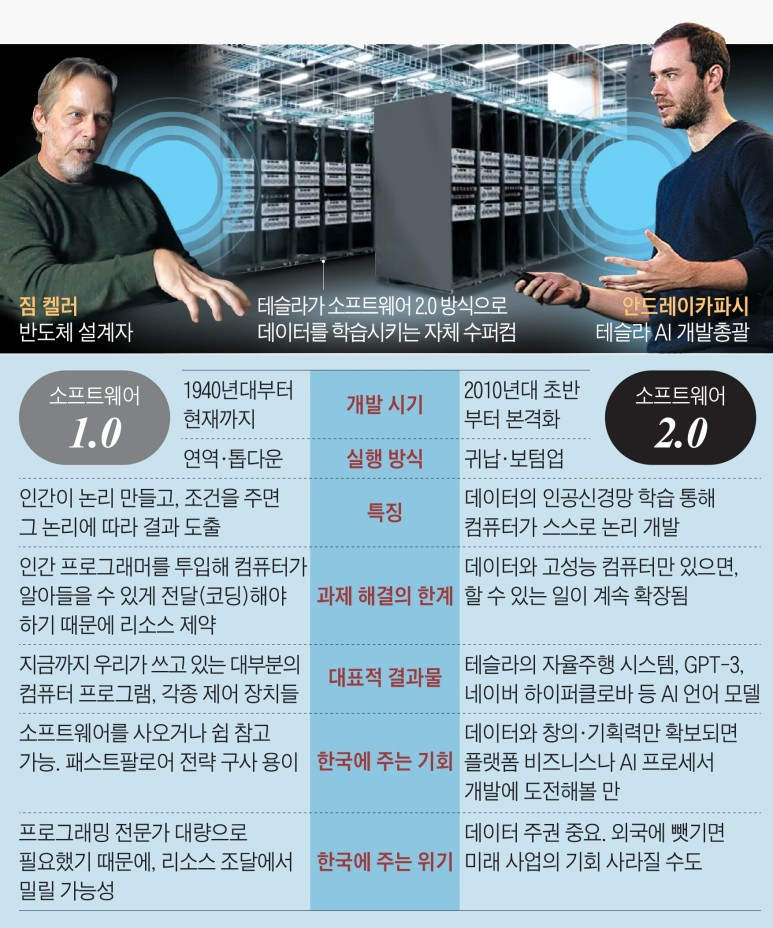
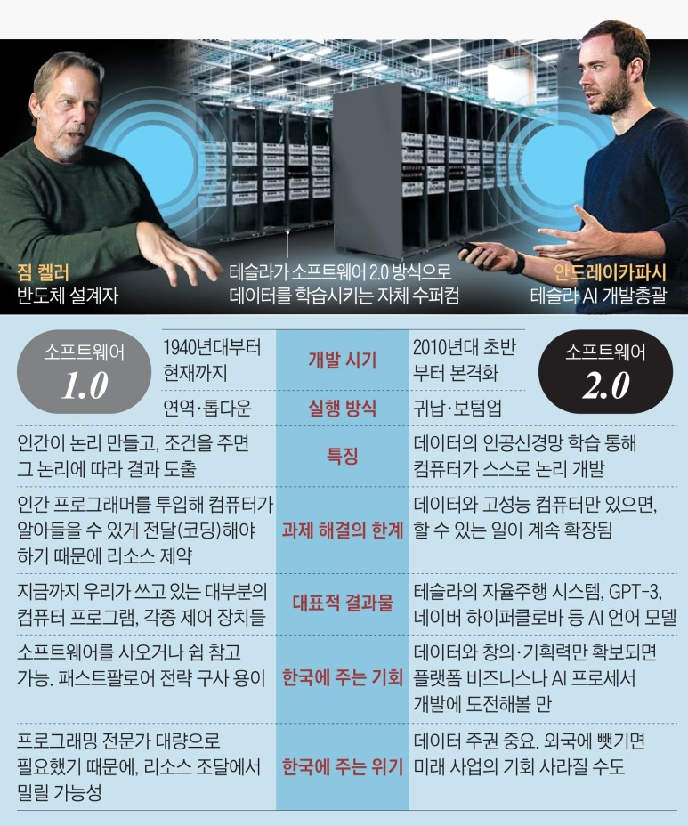

새로운 시대 소프트웨어 2.0
A new era : Software 2.0
반도체의 마법사라 불리우는 짐 켈러가 작년 인텔을 떠나 캐나다 스타트업회사 토스토렌토로 이직했다. 짐 켈러가 회사를 옮길때마다 많은 이들은 그의 귀추에 관심을 가진다. 그가 회사를 옮길 때마다 트렌드를 바꿀 반도체가 나왔기 때문이다. 짐 켈러는 애플과 테슬라에도 있으면서 각 회사들에게 독자칩을 개발해주기도 하였다. 이런 그가 세계 최고의 회사를 마다하고 캐나다의 스타트업 회사로 향한 이유는 무엇일까? 그 이유는 바로 소프트웨어 2.0을 위한 새로운 AI반도체를 만들기 위함이다.
.png) 
인공지능이 처음 등장하게 된 것은 1950년 컴퓨터 공학의 아버지라 불리는 앨런 튜링의 논문에 의해 등장하게 되었다. 그렇다면 소프트웨어 2.0이란 무엇일까? 소프트웨어2.0은 테슬라 AI총괄인 안드레이 카파시(스탠퍼드대 인간처럼 말하는 AI 'GPT-3'개발)가 2017년 처음 사용한 용어이다. 현재는 소프트웨어 1.0으로 운영되고 있다. 이 둘의 대표적 차이에대해 말해보자면 코딩의 유무이다. 그동안 프로그래밍을 짜기 위해서 사람이 컴퓨터가 읽을 수 있도록 규칙에 맞게 코드를 짜 넣어야 했었다. 그러나 소프트웨어 2.0에서는 사람이 코딩을 할 필요가 없게된다. 기존 소프트웨어 1.0에서는 사람이 코딩을 하기 때문에 그 규모가 커지면 커질수록 유지보스등의 들어가는 비용도 점점 더 커지게 된다. 그러나 소프트웨어 2.0은 컴퓨터에 원하는 소프트웨어를 만들기 위한 데이터를 AI에게 제공하여 스스로 소프트웨어를 만들도록 하여 비용적인 면에서도 부담이 적어진다. 현재 소프트웨어 2.0개발 및 활용의 최전선에 서 있는 회사는 테슬라이다. 인간이 도로 주행의 모든 조건에 대응하는 자율 주행 논리 구조를 짜는 것은 어렵기 때문에, 데이터를 학습시켜 AI가 스스로 논리 구조를 짜고 개선하도록 하는 소프트웨어 2.0을 적극적으로 활용하고 있다는 것이다. 그리고 그 최전선을 이끄는 인물이 바로 앞서 말한 안드레이 카파시(Andrej Karpathy)이다.
소프트웨어2.0 실현을 위한 3가지 조건이 있다. 바로 목적에 맞는 대량-양질의 데이터, 예외적 상황의 다양한 사례, 그리고 빅데이터를 학습시킬 초고성능 컴퓨터이다. 현재 AI전문가들은 이 3가지가 충족되면 인간이 풀 수 없었던 난제를 더 빨리 해결할 수 있다 말한다.
위 3가지 조건 중 빅데이터를 학습시킬 초고성능 컴퓨터가 필요한 이유는 소프트웨어 패러다임 전환에 맞춰 하드웨어(반도체)구조의 패러다임 전환이 필수이기 때문이다. 지금 사용되는 반도체는 소프트웨어 1.0에 최적화 되어 있기 때문에 데이터 신경망 학습에 적합한 설계구조를 제작할 필요가 있다. 최근 시장조사 업체 가트너에 의하면 글로벌 AI반도체 시장 규모는 19년 14조원에서 24년 48조로 급성장하게 될것이라 전망하고 있다. 즉 소프트웨어2.0와 하드웨어가 잘 맞아 떨어저 급속한 성능 성장이 가능해진다면 AI반도체 또한 비약적 성장은 예측을 뛰어 넘을 수 있다는 것이다. 카파시 또한 "앞으로 모든 하드웨어가 신경망에 특화된다면 AI 발전이 믿을 수 없을 만큼 빨라질 것"이라 말했다. 소프트웨어 2.0에 최적화된 컴퓨터 하드웨어가 곧 힘을 발휘하게 될 것이고, 여기에 엄청난 기회가 있다는 것이 안드레이 카파시와 짐 켈러의 예언이다. 국내 IT대기업의 AI전문가는 시야를 5년 정도 뒤로 멀리 보면 충분히 실현 가능한 이야기라 답했다.
이렇게 소프트웨어2.0의 시대가 오게되면 인재상또한 변화한다. 기계적 코딩보단 문제를 파악하고 빅데이터를 어떻게 AI에 적용해 비즈니스 모델을 만들어 낼 것인가 이런 기획에 더 많은 인력을 요구하게된다. 하드웨어 또한 켈러의 말처럼 소프트웨어의 변화를 먼저 포착해 하드웨어 변화로 연결할 수 있는 인재가 요구될 것이라한다.
덧붙여 미국 자율 주행 스타트업 '뉴로'출신인 박은병 성균관대 전기전자공학부 교수는 "소프트웨어 2.0에 어떻게 대비하느냐에 따라 한국 기술의 미래가 바뀔 것이라 말했다.


현재 테슬라를 비롯해 구글, 마이크로소프트, 아마존 등등 많은 회사들이 소프트웨어2.0을 향해 나아가는 중이다. 우리나라도 현재 네이버에서 제작한 하이클로버가 소프트웨어2.0의 예이다. 네이버는 50년치 네이버 뉴스와 9년치 블로그 데이터를 국내 최대 최고 성능의 슈퍼컴으로 학습시켰고 이 결과 기존의 AI방법론에서는 수개월 걸릴 일을 소프트웨어2.0의 방식을 통해 불과 몇분 만에 확인 할 수 있었다 한다. 소프트웨어2.0의 방식은 데이터를 더 높은 성능의 컴퓨터로 학습시킬수록 컴퓨터가 계속 영리해진다.테슬라는 세계에 깔린 100만대 이상의 자사차량에서 데이터를 끊임없이 수집하고있다. 차 한대당 8개의 카마라에서 수집된 영상이 자율주행 시스템을 끊임없이 발전시킨다. 테슬라는 차를 팔면 팔수록 자율주행시스템기술이 더욱 발전하게 되는 것이다. 지금까지 테슬라가 수집한 데이터는 48억km, 즉 지구를 12만 바퀴 달린 분량이다. 현재 테슬라는 몇 달 전 세계에서 다섯 번째로 강력한 수퍼컴을 갖췄다고 발표했다. 이제 코딩이 아닌 AI가 코딩을 하는 시대가 되어간다. 멀리 느껴질지 모르지만 AI의 발전 속도는 우리가 무시할 수 없는 수준이다. 우리도 모르는새 서서히 그러나 누구보다 빠르게 자리를 채워나갈 수 있다. 이에 우리는 보다 창의적인 사고를 구상해야한다. 앞으로 IT시장은 소프트웨어 2.0을 빠르게 활용하는 기업이 사업의 우위에 있을 수 있다 한다. 그만큼 우리는 기술적으로도 경제적으로도 사회적으로도 격동의 시대에 살고있다 해도 과언이 아니다. 이 격동의 시대를 잘 파악하고 활용한다면 오히려 스스로를 차별화할 수 있는 기회가 될 수 있을 것이다. 위기를 기회삼아 이 새로운 변화의 바람을 안전하게 맞이하기를 하는 바람이다.